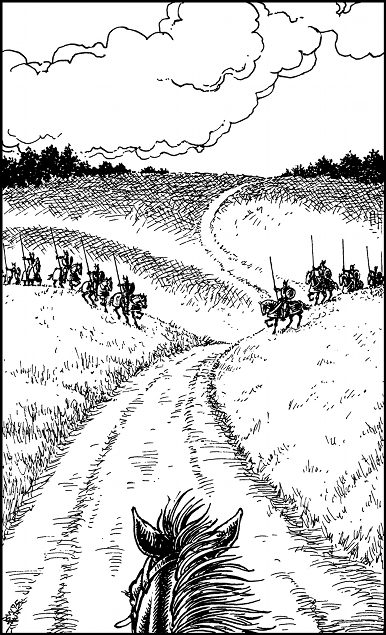

178
‘You do?’ replies the sergeant, excitedly. ‘Well, that’s quite remarkable, especially as my cousin Daliem lives in Kron. Doubly remarkable, in fact, for there is no “Square of the Dragons” in Luyen either!’
With a growl of anger, the sergeant unsheathes his sword and points with it to a window of the gatehouse. ‘Lower the gate!’ he bellows. ‘And arrest them both, at once!’
You react instantly by slapping the rump of Delissa’s horse. This sudden shock sends it bolting towards the gate which has risen to little more than half its full height. Delissa presses herself flat against her horse’s neck and she clears the bottom of the gate with barely an inch to spare. You spur your horse forward and follow in her wake. Just as you and your horse clear the gate, it begins to fall. It crashes down behind you with a thunderous boom, and in so doing it prevents the sergeant and his men from giving chase.
As you gallop along the highway that heads north from Duadon, you hear the gatehouse alarm bell ringing out across the surrounding fields and copses. Ahead the highway passes between a pair of grassy hillocks, and as you draw closer to them, two units of armoured riders suddenly appear from behind these mounds. They are clad in fearsome suits of black armour embellished with skulls and scarlet dragons, and their mounts are similarly protected by plates of burnished steel. They ripple like liquid fire in the light of the setting sun. Alerted by the alarm bell, these riders descend from the hillocks to converge upon the highway and block your path.

‘Sinistrari!’ shouts Delissa, as you bring your galloping steed alongside hers.
‘Stay close and follow my lead!’ you reply. Then you dig in your heels and urge your horse to gallop as fast as he can. As you race towards the closing gap between the two units of enemy horsemen, you reach down and unsheathe your Kai Weapon from among the folds of your disguise. ‘For Sommerlund and the Kai!’ you scream. As the Sinistrari close in, you launch a sweeping blow at the nearest armoured rider.
Pick a number from the Random Number Table. If you possess Grand Huntmastery, add 3 to the number you have picked. If you possess Grand Weaponmastery with the type of Kai Weapon that you are wielding, add 2. If you possess Animal Mastery, add 1.
If your total score is now 3 or lower, turn to 300.
If it is 4 or higher, turn to 80.